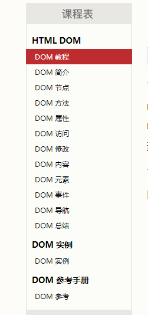
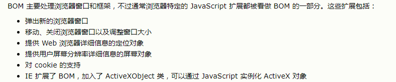
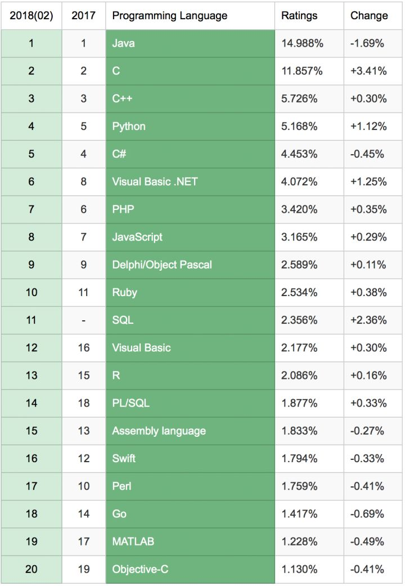

重新认识JS——step1
以w3c和js高级程序设计为基础来重新认识js
什么是js
1、最流程的脚本语言（反正比php好，啦啦啦）,详情见底部排位图
2、主要是应用于HTML和Web，但是nodejs的设计让js不在只是适用于网页端，更是想服务端和客户端发展了。（我大前端果然牛逼）
JS的历史
Netscape 发明了JavaScript => 微软（JScript），Netscope（JavaScript），CEnvi（ScriptEase） 三足鼎立
=> 标准化（97年标注化ECMAScript出现，ECMAScript是标准脚本语言，javascript是以ECMASript为基础来实现的）
JS的实现
js的组成部分： ECMASript、DOM、BOM
ECMASript：核心， 描述了该语言的语法和基本对象
1、DOM： 文档对象模型，描述了处理网页内容的方法和接口 [Document Object Model]
原理： 将网页映射为一个多层节点的结构，DOM树
目标：方便开发人员利用DOM开放的API对网页的结构进行增删改查
从下图的w3c的DOM学习文档中可以看出，DOM提供对于网页元素的增删改查的API和网页事件*

其他DOM：SVG、MathML、SMIL
2、BOM：浏览器对象模型 [Browser Object Model]
BOM主要是处理浏览器窗口和框架，通常一些js的扩展也会被理解为BOM的一部分
扩展：

